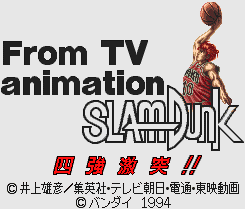
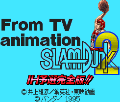
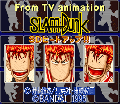

Slam Dunk - SNES Games

- Company: Bandai
- Date Released: 1994
- Genre: Cinematic basketball simulator

- Company: Bandai
- Date Released: 1995
- Genre: Cinematic basketball simulator
This game plays out as a cinematic basketball game. Moves and passes are made by pressing a button. This triggers
a movie sequence where your next button press determines the success of your action.

- Company: Bandai
- Date Released: 1995
- Genre: Basketball simulator
Controls
- A button: ???
- B button: ???
- X button: ???
- Y button: Shoot/Steal
- L button: ???
- R button: ???
- Start: Pause
- Select: ???
This is a pure basketball game. Control your team of five to victory.
Anime Video Game Resource Center © 1998 by Luis A. Cruz